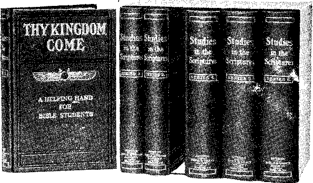

Vol. V. NEW YORK CITY No. 10.
LOST ARTS
And Yet Some Claim Monkeys Were Their Ancestors.
“Numerous are the trade secrets handed, down generation by generation from father to son, and vast is the capital made out of some of them in the commercial world of to-day.
“But there is also, it must be remembered, another side to the case. 'Many, alas! are the priceless trade secrets buried far down below the mouldering dust of the misty past, and lost to the world, perchance never again to be recovered.
“To cite the first example that occurs to the mind of the writer, for instance, what would a Royal Academician of the present day give to be possessed of the secret held by the Old Masters—Raphael, Rubens, Corregio, Van Dyck, and their compeers—for mixing their colors so as to render them imperishable and impervious to the ravages of time?
“Yet another perennial and evergreen conundrum. What were the Pyramids of Egypt intended for? And how were they erected? With all the scientific and practical knowledge at the command of the engineers of the present day, they are not capable of building the Pyramids; in the first place, because we have no machinery of sufficient power to raise enormous blocks of stone such as form them to a height of four hundred and odd feet; and, secondly, we should be at a loss where to obtain the said stone.
“Again, there is no granite within fifty miles of the Egyptian Pyramids of the same character as that of which they are constructed.
“The man who could disinter the buried recipe for Roman mortar would be bowed down to and worshipped by the builders of to-day. How they made it is a profound secret, and bids fair to remain so.
“The mortar is as firm now as it was two thousand y ears ago; it has calmly scoffed at the ravages of time.
“The above are but a few—a very few —of the lost and buried secrets of antiquity which modern scientists and mechanicians would give much to learn.” ■—(Ottawa (Can.) Citizen.
“HANDWRITING ON THE WALL.”
“(Right in between sentences of peace parleys, several nations went to war. Just so between sentences of Christian unity parleys three of the best known and largest religious bodies in America go to wrangling and to using the words ‘fight’ and ‘split.’ In the state, peace went to war. In the church unity seems far less likely than division.
“The three bodies at this moment racked and torn by discord are the Congregational, the Episcopal and the Presbyterian. They represent millions of actual members, while if adherents be included they are a third of all Protestants in America. Old-timers in habits of observing religious conditions agree that they have rarely known them to be more serious. In the case of one, at least, only the best brand of conciliation will avoid a serious ruction.”—New Orleans Times-Democrat.
THE FULFILMENT OF PROPHECY.
Under “Church Announcements” in the local newspapers there recently appeared an advertisement which stated that at a church in Brooklyn there would appear Sunday evening the following:
“Miss Anna Case, soprano of the Metropolitan Opera Company.
“Mr. Paul Dufault, famous 'French tenor. (Last appearance before world tour with Mme. 'Nordica.)
“Mme. Van der Veer, contralto.
“Mr. Clifford Cairns, basso.
“Mr. Max Droge, cellist.
“Sixteen selected solo voices.
“And, just as like as not, there may be some praying and preaching, too.”—(Rev. 18:2-6.
PHILOSOPHY OF THE DELUGE
“As it was in the days of Noah, so shall it be also in the days of the Son of Man.”—Luke 17:26.
f^LR richly endowed colleges are under-mining faith in the Bible, which means faith in a personal God, and are substituting a scant recognition of the laws of nature, devoid of sympathy or mercy. Practically every minister graduated during the last twelve years has been an agnostic and a believer in human evolution. Disbelief in the Bible account of man’s creation in God’s image, means disbelief also in a fall from that image, disbelief in the need of redemption and reconciliation, and disbelief in the neces
sity for the plashed by 3:111-21.
Restitution to be accom-iMessiah’s Kingdom.—Acts
We do not question the’ sincerity of the Higher Critics. However, it is not honorable for those who have abandoned the creeds to pose before the public as supporters of the creeds, and to draw salaries and receive honorary titles for undermining the faith of the people, while posing as the representatives of 'Christ and the Bible. Such a course is dishonest and dishonorable.
The Deluge Corroborated by History.
We would that we might lure back to the Word of God some of the noble minds now arrayed against it! We know their difficulty. In their minds they associate the unreasonable theories of our creeds with the Bible, believing it to be the foundation for the gross darkness and superstition which once blinded us all. Would that we could show them, as we now see it, the fallacy of this position—■ show them that the Bible is in most violent conflict with the errors of the past, and that it teaches from Genesis to Revelation a Divine Plan so wonderful that all may be sure that only a God of Wisdom and Love could have devised it, and only those moved by His Holy (Spirit could have written it.
The Bible truly says that we may see the deep things of God only by the illumination of the Holy 'Spirit, and that illumination is promised only to the sanctified. The fearful thought impresses us that by no means all of the professed ministers of Christ are sanctified and in a condition of heart to be guided into a knowledge of the Truth.
The Higher Critics approach every 'Bible topic from the standpoint of unbelief, and if they would reverse their position and seek for corroboration of the 'Bible story, their success would be better. These critics, exploring the ruins of Babylon, found baked clay tablets rudely picturing the Ark, and saying a few words about a general deluge. Instead of saying that this confirms the Bible thought, they reverse the proposition, and say that the Israelites, in captivity in 'Babylon, doubtless drew their story of the Deluge from the Babylonian legends.
How silly to suppose that the beautiful, interesting and connected narrative of Genesis could ever have been drawn from a few poor, miserable, fragmentary words which the Babylonians have recorded on the subject! The Genesis account gives the genealogy of Noah in a most remarkable manner—'the exact day and year and month of his life in which the Deluge occurred, the number of days of rain, how long the flood prevailed, etc., etc. .Before the finding of the Babylonian tablets, the Higher Gritics held that the entire story of the Deluge was a myth, and that Jesus and the Apostles had been deceived when they quoted Moses in respect to it.
Geology Confirms the Mosaic Deluge.
We wish to deal with the facts of nature and briefly to show that they fully confirm the words of Jesus, the Apostles and Moses respecting the Deluge.
WHAT IS THE SOI L?
A postal request to the Editor will secure a free copy of this paper in which this interesting subject is treated in a manner sure to satisfy.
The great stumbling-block heretofore has been the supposition that the' story of the Deluge implies a flat earth, and that such a flood of waters rising higher than the mountains should be recognized as an impossibility, since we know that the earth is a sphere. Thus does shallow thinking, called “wisdom of this world,” set in defiance the Wisdom of (God and His Word—to its own confusion.
As the study of astronomy has progressed, the Valian theory respecting creation has come forward. It shows that the earth when in a molten condition must have thrown off various minerals in gnaseous form. These, cooling, would become more or less separated from each other, according to density, and must have constituted great rings and bands about the earth, similar to those which we perceive encircling Saturn and Jupiter. As the earth cooled, these rings would obtain separate motions of their own, because of their distance; yet always they would tend to gravitate toward the earth. The circumambient air, or firmament, would keep these from immediate precipitation. Gradually they would spread out as a great canopy, gravitating more and more toward the poles, because of the greater centrifugal force at the equator. Finally, the accumulation at the poles would become so great a.s to overcome the resistance of the atmosphere, and cause precipitations, which would flow toward the equator.
The theory is that many such deluges had been precipitated upon the earth before man was created, and that from these came many of the mineral deposits of earth. Only one such ring remained when man was created. Indeed, this was not a ring, but had come to the state in which it acted as a canopy. As the last of these rings, it consisted of pure water. As a canopy it refracted the sun’s rays much as would the roof of a hot-house, so that the temperature of earth was uniform—the same at the poles as at the equator. Divine 'Wisdom foreknew the condition of things which would prevail at the time of the Deluge, and hence delayed the breaking of this great envelope of waters until that time.
Frozen in the Solid Ice.
Not long ago, in Siberia, a mammoth was found with grass between its teeth, frozen solid in a great basin of ice, which was so clear that the animal could be seen long before the ice melted enough for it to be conveniently exhumed. Similarly, a deer was found in the polar regions, with undigested grass in its stomach, proving clearly that the catastrophe which overtook it and froze it solidly in the ice was a sudden one—just such as did occur, according to the Valian theory.
The breaking of the watery envelope made the change at the poles sudden, and sent a great flood of waters over the earth toward the equator. Thus came the great Glacial Period, and some of the great glaciers, or icebergs, carried over North America, cut great gullies, valleys, crevices, canyons. Geologists have traced the course of some of these and charted them.
Equatorial Heat Was Intense.
As the cold at the poles was extreme —to form the great ice-caps covering the earth and only gradually melting away—• so the heat at the equator must have been proportionately extreme. The intense heat at the equator, warming the ocean, set up ocean currents. These for the past four thousand years have' been gradually modifying the arctic regions—advancing the temperate zone further and further toward the poles, and more and more reducing the ice-caps, bringing them toward- the equator as great icebergs to be melted and sent back warm.
The Ark Divinely Protected.
We naturally inquire, Where was the Ark while such a tonrent of water poured over the earth from the poles?
How was it that the Ark was kept safe and comparatively quiet in such a time of stress? The answer of faith would be that God, who directed Noah and his family to build the Ark, exercising His Power would undoubtedly protect it.
And now comes forward Prof. George Frederick Wright, the geologist, who tells the world that the region around about. Mt. Ararat, where the Ark rested, was apparently at one time the scene of a great eddy. While the waters raged elsewhere, God specially held that part quiet, just as we have often seen a quiet eddy or bay alongside of a swiftly rushing stream. Prof. Wright’s deductions respecting the quietness of this little corner of the earth are drawn largely from the fact that he' finds there a wonderfully deep soil, which seems to indicate that it was a settling basin for intensely muddy waters in the long ago.
We can draw a lesson from the Deluge in the line of our text. We deduce that the Savior’s words do not refer to the wickedness of the antediluvians, and that He did not compare it to the wickedness at the time of His Second Advent, though doubtless a correspondency might have been deducible. The Master’s words would imply rather that, as the people of Noah’s day were quite unconscious of the coming Deluge, so will all mankind be totally unconscious of the great catastrophe which w’ill come upon the world in the end of this Age, preparing the way of Messiah’s Kingdom.
The clear teaching of our text is that the Day of the Son of Man, the time of His parousia, or presence, will precede the time of trouble coming upon the world. 'St. Matthew’s account of this same discourse is slightly different and emphasizes the point we are making. It declares, “Thus shall it be in the presence [parousia] of the Son of Man.” In other words, the Scriptures clearly teach that the Second Coming of Jesus will be invisible to the world, and visible, even to His people, only by the eye of faith.
During His parousia a sifting, or testing, of His consecrated Church will proceed, and will result in the gathering of all the Elect into the Heavenly Kingdom by the change of the First Resurrection. This will be the full end of the Gospel Age, and the full beginning of the New Age. It is to this time Jesus referred, saying, “Watch ye, therefore, and pray always, that ye may bo accounted worthy to escape all these things that shall come to pass, and to stand before the Son of Man.”
As soon as the Church shall all have passed beyond the veil into the condition of Heavenly glory—the Kingdom condition—the great time of trouble will fully ■envelop the earth—“a time of trouble, such as never was since there was a nation.”—Daniel 12:1; Matthew 24:21.
It will be that time of trouble Which will be Messiah’s revelation of Himself to the world. In it, they will seek the ■covering, or protection, of the great rocks of society (secret orders) and of the great mountains of earth (earthly governments) (Revelation, 6:14-16.) But none of these will be able to deliver them from the fiery trouble (distress) of that Day, which will consume every institution out of accord with righteousness, truth, justice. “He shall be revealed ... in flaming fire, taking vengeance.” —II. Thessalonians 1:7, 8.
The vengeance will not be so much against deluded and ensnared humanity, as against evil principles and the unjust arrangements of the present time. When we say unjust arrangements, we do not wish to be understood that the world is necessarily more unjust than in the past; but rather that, with our increased light and knowledge, more' is expected of the present generation than of their forefathers.
•From all accounts, we infer that the time of trouble will be sharp and short, “else would no flesh be saved.” (Matthew 24:22.) Messiah’s spiritual Kingdom, invisible to men, will come to the rescue. It will have its earthly representatives, and order will soon come out of chaos. Humanity, humbled by the fall of present
(Continued on 2d page, 2d column.)
Gihr Sibir JB’ittfonta
Multiply PUBLISHED AT
82 BEEKMAN ST.. NEW YORK CITY C. W. HEK, Editor.
Monthly—12 cts. a year. Single copies, 1c.
An Independent, Unneetarian Religious Nenupaper, Specially Devoted to the Forwarding of the daymen’s Home Missionary Movement for the Glory of God and Good of Humanity.
THE CHURCH’S EXTREMITY.
According to the "New York World,” Jack Rose, the star witness in the Rosenthal murder case, is to lecture on the “Underworld” for the benefit of Christ Episcopal Church at East Norwalk, Conn. Mr. Rose has purchased a farm in Connecticut, and has lately been turning his attention to tilling the soil and to lecturing.
IS THIS ANOTHER RESTITUTION WHEAT?
“What seems one of the most wonderful and fruitful discoveries of the world,” says the ‘Tablet,’ “was announced and described in a lecture at the Royal Colonial Institute recently. A few years ago it was universaly believed that in the dry belt in 'South Africa agriculture was tied to the water furrow. This meant a few cultivated patches inland in a desert. But tens of thousands of acres are to-day carrying crops in the dry district, with no help from irrigation. We quote the lecturer’s words : ‘America has grown wheat on a five-inch rainfall, but we in South Africa have grown a rainless wheat. That is to say, during the past season at Lichtenburg, which is in the dry zone of the Transvaal, we have grown a wheat without a single drop of rain falling upon it from seed-time until harvest. This is the durum wheat, Apulia, which we originally introduced from the dry belt of Italy. Our success has been due to the use of what we term moisture-saving fallows. The great problem of South African agriculture is not the problem of fertility. It is the problem of the conservation of moisture. We have now solved that problem and made possible the immediate settlement of our dry or arid lands.’ ”—'Boston Transcript.
TAKING CHANCES ON THE HEREAFTER.
Writing from Berlin a correspondent of an American newspaper says: “Berlin is becoming a ‘Godless’ capital. It costs money here to be religious or even to admit that you have any ‘faith.’ The government adds 20 per cent, to your income tax for chances in the hereafter if you call yourself a Protestant. The number of ‘irreligious’ in Berlin has doubled) in the last twelve months, according to the tax figures published to-day. There are now about 120,000 against 60,000 a year ago. Thousands apparently would rather take their own chances of getting to heaven than to pay for the help of the state church.”
AND THE WORST IS YET TO COME
“>A study of twelve large American cities,” reported at a. convention of Northern Michigan Baptists, “shows that in but one of them do communicants of Christian bodies—Protestant and Catholic combined—equal the non-Christian population.”
MORE CONVICT PREACHERS
THAN BARTENDERS.
The Carthage (Mo.) Democrat is authority for the statement that there are more preachers than bartenders serving as convicts in Georgia penal camps. It adds that there are no newspaper men.
“IN THE TIME OF THE END.”
Eish preserved for weeks in hot weather W’thout ice is a recent Russian discovery. “In the time of the end * * . * knowledge shall be increased.”—Daniel 12 :4.
XL THE RICH MAN AND LAZARUS X
V All Christians have wondered re- J? V speeting this parable. When taken V V literally it seems unreasonable. Why X V should a man suffer torture merely V X because he was rich, well clothed, XL 24 and bountifully fed? And why X V should another man be carried to X X glory simply because he was sick AL A and poor and a companion of dogs? Zs $ In the clear light now shining, this 2N K parable is luminous and beautiful <6* R, to such an extent that one is com- 4% & pelled to laugh at his own foolish misunderstanding of it in the past.
& The full explanation of this par-& able is given in another number, which we shall be glad to send you, free of charge, upon postal-card vz
Sf request. Address publishers. 82 V Beekman St., New York City, N. Y. XL
(Continued from 1st page, 4th column.) institutions, will be ready to accept Messiah’s Kingdom. We read, therefore, that it will be "the desire of all nations.” .Haggai 2 :7.
It is for us who are the called of God ('Romans 8:28), to continue to abide in Christ, to seek His will in every matter, to wait patiently for His appointed time for our deliverance, and according to our covenant, lay down our lives in the service of the brethren. We remind you of St. Paul’s words, “The Day of the Eord so cometh as a thief in the night. When they [the worldly] shall say, Peace and safety; then sudden destruction cometh upon them, as travail upon a woman with child ; and they shall not escape. But ye, brethren, are not in darkness, that that Day should overtake you as a thief. Ye are all the ohildren of light, and the children of the Day.”-—1 Thessalonians 5:1-5.
The light now shining is and should be very helpful to us. If we realize that we are living in the “days of the Son of Man”—that the inspection of the’ Church is now in progress, iand that soon the 'Elect will be complete—this faith will make us the more zealous to make our calling and election sure. Therefore,
“Let us watch and pray,
And labor till the work is done.”
Gradually mankind will come to understand. Gradually their eyes of understanding will open, and they will see that it is the “wrath of the Lamb” that causes the “time of trouble such as never was since there was a nation.” They will learn the intended lesson.
Some, in reading Jesus’ words, “As it was in the days of 'Noah,” have inferred a time of dreadful wickedness in the end of this Age, corresponding to the wickedness of Noah’s day. There may or there may not be a parallel in this respect. We merely call attention to the fact that the
CHRIST’S GOSPEL MISREPRESENTED
“It pleased God by the foolishness of preaching to save them that believe.”—1 Corinthians 1:21.
THERE is a wide difference between foolish preaching and “the foolishness of preaching” that our text declares is of Divine arrangement. The many topics of interest and profit to humanity all have their time and place. But the preaching of the Gospel has an exclusive right of way in the Church of Christ. If some claim that the people will no longer attend Divine service to hear Gospel preaching, we reply that there are three reasons for this.
(1) The Church lost the real Gospel during the Dark Ages, and few Christian people have yet recovered it. The word Gospel, as all agree, signifies good tidings, a message of joy; but the message handed down to humanity from the Dark Ages has been the reverse of this —bad tidings of great misery for nearly all of our race. Is it any wonder that the great majority are disgusted with the horrible misrepresentations of the creeds? Mankind have trials and difficulties enough in the present life, and need encouragement to hope for better things in the life to come.
(2) Responding to the growing sentiment of intelligence, the ministers of the various denominations of Christendom have ceased to preach bad tidings of great misery for all but the very elect. Nearly all ministers, graduated within, the last twenty years, have lost all their faith in the Bible as the inspired Word of God, in the theological seminaries, where they were taught unbelief, under the name of Higher Criticism; where they also were taught to consider it honorable to stultify their manhood by-accepting ordination and salary for serving a denomination whose published creed they disown and despise. In the same seminaries they acquired the thought that it is right and honorable to- receive title, honor and salary from a church, ostensibly as a Christian minister and Bible exponent, and then to use the opportunity to undermine the faith of the church and to destroy confidence in the Bible as the inspired Word of God.
Under these conditions, what shall these ministers preach instead of the Gospel of Christ, which they no longer believe? Is it any wonder that they preach those things that they ought not to preach, and leave unpreached those things that they ought to preach? Not many of their hearers care for scientific disquisitions; not many of them care to hear commonplace essays on good morals. So how can such ministers avoid foolish preaching?
(3) Not content with undermining the faith of the people who trust and honor and obey them, these ministers mix their higher critical views and evolutionary views with diluted morality, and serve this as instead of the Gospel of Christ. He who thinks that such a message will convert a mind from sin to righteousness, from unbelief to faith in God, deceives himself. He who thinks that such messages will have a sanctifying power in the hearts of God’s people, equally deludes himself.
No Gospel Without Redemption.
The essence of the Gospel of Christ
Master did not so say. He said that as in Noah’s day humanity were eating, drinking, marrying and building, without realizing that a great change in dispensation was impending, so it will be with mankind in the days of the Sou of Man.
In the time of Christ's Second Presence, men will know it not, but will proceed about the ordinary affairs of life— eating, drinking, planting, building—and know not, until the great and sudden catastrophe of anarchy is upon them. As literal water swept away literal things existing before the Flood, so symbolic fire —trouble, destruction—will sweep away the institutions of to-day, and prepare the way for the new institutions, which the -Scriptures describe as the new heavens and the new earth. (Isaiah 66:22; 2 Peter 3:13.) The new heavens will be the new ecclesiastical powers—the Church, the Elect in glory with Christ. The new earth will be the reorganized social arrangement, wholly different from the present.
Whoever expects that the Kingdom will bring an instantaneous Paradise is mistaken. Whoever expects that God’s will shall be done on earth as completely' as in Heaven the moment Messiah’s Kingdom is set up, is mistaken. By Divine appointment, that Kingdom is to last for a thousand years. During that time it will be burning out—consuming— ignorance, superstition, selfishness, sin-root and branch.
Al! who respond to its blessed influences will thereby be uplifted out of sin 'and death conditions to human perfection. On the contrary, all who with fullest opportunity shall be resisters of righteousness and lovers of iniquity will be destroyed with Satan Jn the Second Death—“punished with everlasting destruction from the presence of the Lord.” —II. Thessalonians 1:9.
is that He died for sinners, the Just for the unjust, that He might bring mankind back to God. But the false gospels deny that man ever fell from the likeness of God, and equally deny therefore that he needed a Redeemer and that he has a Redeemer. Such spurious gospels, which leave out the very core and essence of the Divine Message, are false, by whatever honorable channel they may have come. We may be sure that they are of the Adversary himself; for they make void the Word of God, the death of Jesus and His resurrection, and His coming again to give to mankind the glorious blessings and privileges bought with His precious blood.
The True Gospel, the "good tidings of great joy, which shall be unto all people,” contains not a single word respecting an eternity of torture at the hands of fireproof demons. It contains not a single word which would discredit the Wisdom, Justice and Love of the Father above, whose tender mercies are over all His works and whose salvation is yet to be extended to the ends of the earth.
The True Gospel, acknowledging that humanity has come justly under a penalty or curse of death, sets before the groaning creation a glorious hope. It proclaims, as Jesus did, that the time is coming when the curse shall be removed, and when God through the Messianic Kingdom “will wipe away all tears from off all faces.” (Isaiah 25:8.) It proclaims, as Jesus did, a glorious prospect for all who desire to come Into harmony with God ; and a just penalty, or stripes, upon all those who sin wilfully against light and knowledge and opportunity. It proclaims that a New Day is dawning, in which the Lord will give “beauty for ashes, and the oil of joy for the spirit of heaviness.”—Isaiah 61:3.
The True Gospel includes the “Gospel of the Kingdom”—that the Divine arrangement now is for the selection of the Kingdom class from amongst men, to be heirs of God and joint-heirs with Jesus Christ in His Messianic Kingdom. It proclaims the honorable work of the Church as the Kingdom of God by and by, to judge, rule and bless all the families of the earth. It proclaims also that the number who will attain to this Kingdom glory is limited—a Little Flock, to whom it will be the Father’s good pleasure to give the Kingdom. (Luke 12:32). It exhorts the making of ‘‘our calling and election sure” to a share in that Kingdom.
Is Gospel Preaching Logical?
Let us notice the world’s viewpoint, which causes the Gospel Message to appear foolish to them. To the worldly-
This article was published in Vol.
5, No. 3, of THE BIBLE STUDENTS & MONTHLY. The great demand for <6> copies of it has been remarkable, A sample copy will be mailed to anyone free upon receipt of po.st- y? card request. Address publishers, V 82 Beekman St., New York. V wise it looked very foolish, indeed, for Jesus to go about Palestine with twelve disciples, performing some miracles and inviting chiefly the poor to become His followers, leaving business and other pursuits. “Ah,” says the world, “how impractical was Jesus, and how foolish was His message! A business man would have laid a good foundation for his work by making friends with the Scribes, the Pharisees and the Doctors of the Law, and utilizing their influence with their hold upon the people.”
But, we ask, how then would the Scriptures have been fulfilled? Who would have crucified Christ, or have caused His death? There would have been no reconciliation possible for mankind. It is well for us that Jesus did not follow the suggestions of worldly wisdom. Truly “the wisdom of this world is foolishness with God,” even as the Wisdom of God is foolishness with the children of this world.
It is because worldly wisdom got its hold in the Dark Ages that the Gospel has been perverted so greatly. Great human institutions have arisen, mighty and powerful, through man’s cunning. Priestcraft and statecraft have made the professed Church of Christ one of the greatest business institutions on earth. Not more, but less, of human wisdom is what we need ; and not less, but more, of Divine Wisdom and instruction from the Bible.
Why It Seems Foolish.
From the world’s standpoint it stems foolish that God should invite any to do-right and to be His servants. It seems weak for a God of all power to entreat, where He could command and enforce obedience. Earth’s kings, having the power, would enforce their commands ; in fact, everybody, as a rule, executes his own will. How strange, therefore, it appears to the world, that it should be otherwise with the Almighty!
The Bible, however, gives the information. God wishes to select a special class of special servants. To test their loyalty, there must be opportunity for them to resist Him and to refuse obedience. God causes His Message or invitation to
pass on to others also, that thus He may find the peculiar people who prefer to do good rather than evil to such an extent that they are willing to suffer for righteousness’ sake. The special work which He designs the Church to accomplish requires such loyal, faithful souls as these—men and women glad to sacrifice their lives in the service of the Lord, His cause and His brethren. The class He seeks “count not their lives dear unto themselves.”
God carries the proposition still further, however, and puts this special class to peculiar and severe tests, that the trial of their faith and obedience,’ being more precious than that of gold, may be found acceptable unto His pleasement— eventually.
Persecutions, tribulations, attacks from the world, the flesh and the Adversary, are permitted to come against these to test their loyalty. None of these things are what the world would expect; and to tell the world of these is to relate what seems to them foolishness. They cannot see why consecrated people of God should suffer reproofs for righteousness’ sake, for the Truth’s sake.
But all these matters are clear and plain to those who are taught of God—• to those who have learned that the Church is being selected from amongst mankind for a very special work of God. This makes it appropriate that their loyalty be tested to the limit, in order that they may be counted worthy of the “glory, honor and immortality” which God has for those who love Him.
By and By It Will Be Different.
The Divine Plan outlined in the Bible is different. The procedure under Messiah’s Kingdom and dealing with the world will be exactly what the world will concede to be a wise program. In that time all. darkness, ignorance and superstition will speedily pass away under the advancing light of the Sun of Righteousness. The way of righteousness will no longer be narrow, secluded and rugged, as at present. God describes it through the Prophet, saying, “A highway shall be there, and a way, and it shall be called the-Way of Holiness; * * * the redeemed of the Lord shall walk there; no ravenous beast shall go up thereon.”—Isaiah 35 :8, 9.
Faithfulness will bring the Divine reward of freedom from weakness, and of increase of strength—mental, moral and physical. Day by day the well-doer, walking on. the Highway of Holiness, will be coming nearer to human perfection. Thus will be fulfilled, through Christ, the gracious promise that “God shall wipe away all tears from all faces,” and “there shall be no more curse, neither sorrow, nor sighing, nor crying; for the former things shall have passed away.”
Many Stripes and Few Stripes.
The. Bible clearly indicates that the Adamic condemnation against our race will be fully offset by the merit of Christ’s sacrifice. But on the other hand, it tells us that every transgression which is not purely of inherited weakness is charged to the account of the transgressor and must be met by him. Jesus emphasizes this lesson, saying, “He that bucv his Master’s will and did it not, sh.ui be beaten with many stripes; but lie that knew it not and yet did things worthy of stripes, shall be beaten with few,stripes.” Some of these stripes, or punishments, may indeed come to the transgressor in the present life; and if so, he does well to profit by them.
But whether in the present life or in the future life, every wilful transgression will receive “a just recompense of reward.” The difficulty with our theories of the Dark Ages on this subject has not been that they taught a punishment for sin but that they taught an unjust penalty, dishonoring to the Creator and stultifying to the believer.
The Records of Wilful Sin.
It is a mistake to say that increasing sins would increase the pangs of conscience and that thus each would be punished. We know to the contrary that many, as they become steeped in sin, lose all sensibility. St. Paul corroborates this thought, saying of some that their consciences become “seared”—calloused.
God provided that each individual shall keep a record in himself of his own moral obliquities. Each violation of conscience weakens the character. Character weakened, degraded, can be reconstructed only a. ith proportionately great difficultly. Thus some, during the period of Messiah’s Kingdom, will be struggling against weaknesses which they brought upon themselves, aside from those of Adamic heredity. The assistance from the Royal Priesthood will be proportionate to the Adamic weakness contrary to the human will. Outside temptations will be gone. Full knowledge will be there; but character will 'be the thing, of paramount importance as determining who will attain everlasting life.
Our Redeemer gave a suggestion along this line when He said to the Pharisees, “How can ye escape the condemnation of Gehenna?” (Matthew 23:33.) The Valley of Hinnom (Gehenna) outside Jerusalem, where the offal was finally destroyed, symbolically represented the Second Death, as mentioned in Revelation 20:14. Jesus did not condemn the Pharisees to the Second Death. His mission to the world was not to condemn men; for they were condemned already —under the Adamic condemnation. The Son of Man came “not to condemn the world ; but that the world through Him might be saved.” (John 3:17.) At the time He spoke these words respecting the Pharisees, He was laying down His life on behalf of all the children of Adam. They could not forfeit their share in His resurrection work until that work had been completed and they had enjoyed t.wir share of the Redeemer’s favor.
The import of the Redeemer’s words, therefore, was that He perceived in them so much of dishonesty and hardness of heart that He prophesied that they would have a hard time to reform character, even under the favorable conditions of the Millennium. They had seen the Master, heard His teachings, witnessed His miracles, and must have been reasonablv convinced that it was a holy power which operated in Him. When, therefore, in bitterness of spirit they declared that His miracles and teachings were inspirations of Satan, they were well nigh without excuse.
It could hardly be supposed that such perversity of spirit was the result either of ignorance or of Adamic weakness. Evidently there was great wilfulness associated with it. Hence the Master declared that persons who could thus attribute to Satan things which they recognized as good, pure and holy,, must have greatly perverted their consciences. They will be obliged to suffer stripes accordingly, and will have proportionately great difficulty in bringing themselves into harmony with the requirements of the Messianic Kingdom.
“Preach the Word.”
All of God’s people are preachers. The begetting influence of the Holy Spirit is the only ordination necessary, and. without it no one has Divine authority to preach. Preaching, in its broad sense, means to declare, to make known. God’s
FREE LITERATURE!
Send postal-card request for . free copies of this paper. Some of the interesting subjects you may have for asking are:
Calamities—Why Permitted?
Creed Idols Smashed.
The Rich Man in Hell.
Thieves in Paradise.
Spiritism Is Demonism!
Our Lord’s Return.
Which Is the True Gospel?
The Handwriting on the Wall!
Social Conditions Beyond Human.
Power.
Where Are the Dead?
What Is the Soul?
Prince Lucifer of Old, Now Prince of Demons.
The Most Precious Text.
The Sabbath Day.
Responsibility to Creeds1.
Missionaries in China.
Purgatory Fires! Not Now, but Soon.
The Lost Key of Knowledge.
A Famine in the Land.
Cardinal Gibbons’ Sermon
Immortality of the Soul.
Do You Believe in the Resurrection of the Dead?
Some Foreign Mission Facts;
The Battle of Armageddon.
'.Book makes no division of His people into clergy and laity. “He that hath My Word, let him speak My Word faithfully,” saith the Lord. Let us declare God’s Message in its purity and simplicity, whoever hears and whoever refuses to hear. Let us not be disappointed that the worldly-wise will think it foolish, as in St. Paul’s day; and let us not be surprised if the preaching of this Message shall bring odium, as it did upon the Master and the Apostles. “The world knoweth us not, even as it knew Him not.”
FORGIVABLE AND UNPARDONABLE SINS
"The wages of sin is death.’’—Romans 6:23.
THE extreme penalty for wilful sin is death. “'The wages of sin is death.” t Romans 6:23.) Adam’s penalty, which involved his entire race, was of this sort; ■and only as the result of Christ’s death as our ransom from the penalty of that wilful sin is any forgiveness of it, or subsequent sins, possible.
Forgivable sins are those which result from weaknesses incurred through that one Adamic sin which Christ settled once for all. They are such as are not wilful, but are committed through ignorance or weaknesses of the flesh. God stands pledged to forgive all such sins upon our repentance, in the name and merit of Christ’s sacrifice.
Unpardonable .sins, sins which cannot be forgiven, are such as are wilfully done; As the penalty of the first wilful sin was death—extinction of being—so death is the penalty of every wilful sin against full knowledge and ability to choose and ■to do the right. This is called Second Death, in distinction from the former or Adamic penalty, from which Christ’s ransom-sacrifice will release all mankind.
The “sin unto [second] death,” for the forgiveness of which the Apostle declares it is useless to pray (1 John 5 :16), is not only a wilful sin, but a sin against clear knowledge—a sin for which no adequate excuse can be found. Because it is a sin against clear knowledge, or enlightenment in holiness, it is called the “sin against the holy Spirit” (Matthew 12:31, 32), for which there is no forgiveness.
But there are other partly wilful sins, -which are, therefore, partly unpardonable. In such the temptations within and without (all of which are directly or indirectly results of the fall) have' a -share ; the will consenting under the pressure of the temptation or because of the weakness. The Lord alone knows how ■to properly estimate our responsibilities and guilt in such cases. But to the true ■child of God there is but one proper course to -take—repentance and an appeal for mercy in the name and merit of 'Christ, the great sacrifice for sin. The 'Lord will forgive such a penitent, in the sense of restoring him to His favor; but he will be made to suffer “stripes” (Luke 12:47, 48) for the sin, in proportion as God sees it to have been willfully committed.
Not infrequently a conscientious person realizes that he has committed sin, and that it had some wilfulness in it. He properly feels condemned, guilty before God; realizing his own guilt and forgetting the' fountain for sin and uncleanness, opened by God for our weak, fallen race, he falls into a state of sadness, believing that he has committed the sin unto death. Such wander in deserts drear, until they find the cleansing Fountain. Let such remember, however, that the very facts of their sorrow for sin and itheir desire to return to divine favor are proofs that they have not committed the sin unto death ; for the Apostle declares that those who have committed sin of this sort cannot be renewed unto repentance. (Hebrews 6:6.) Penitents, then, may always feel confident that their sins were in part, at least, results of the fall, and hence not unto death, but requiring forgiveness and stripes.
Future Retribution Sure.
While the Scriptures teach that the present Gospel Age is the Church’s Judgment Day or period of trial, and that the world’s Judgment-Day or time of trial will be the Millennial Age, it is, nevertheless, a reasonable question to ask—To what extent will those who are not of the consecrated Church be held responsible in the Millennial Age for their misdeeds of cruelty, dishonesty and immorality of the present time? And to what extent will those of the same class then be rewarded for present efforts to live moral and benevolent lives?
These are important questions, especially to the world; and well would it 'be for them if they could realize their importance, and profit thereby. They are important also to the Church, because of our interest in the world, and because of our desire to understand and teach correctly our Father’s plans.
We have learned that the sacrifice of Christ secures for all mankind, however vile, an awakening from death, and the privilege of thereafter coming to perfection, and, if they will, of living forever.
God’s Message, for all that, will1 accomplish its purpose. He will find the “peculiar people” whom He sees ; not one of the foreordained number will be lacking. They will all be blessed and holy. As Messiah’s associates in the Kingdom, they will then “declare the decree.” (Psalm 2:7.) The Law will go forth, and chastisements will follow to enforce the Law, until all shall be brought to a knowledge of the Truth, the incorrigible destroyed, and every knee shall bow and every tongue confess, to the glory of God.
“There shall be a resurrection of the dead, both of the just and the unjust.” (Acts 24:15.) The object of their being again brought into existence will be to ■give them a favorable opportunity to secure everlasting life on the conditions which God requires—-obedience to His righteous will. We have no intimation whatever in the Scriptures that, when awakened, the moral condition of men will have changed; but we have much, in 'both reason and revelation, to show that as they went into death weak and depraved, so they will come out of it. As there is “no work, nor device, nor knowledge, nor wisdom in the grave” (Ecclesiastes 9:10), they will have learned nothing; and since they were sinners and unworthy of life and Divine favor when they died, they will still be unworthy; and as they have received neither full rewards nor full punishments for the deeds of the present life, it is evident that just such a time of awakening as God has promised during the (Millennium is necessary ; for rewarding, and punishing and giving to all mankind the opportunity for eternal life secured by Christ’s great ransom sacrifice.
While, strictly speaking, the world is not now on trial—that is, the present is not the time for its full and complete trial, yet men are not now, nor have they ever been, entirely without light and ability, for the use of which they are accountable. In the darkest days of the ■world’s history, and in the deepest degradation of savage life, there has always been at least a measure of the light of conscience pointing more or less directly to righteousness and virtue. That the deeds of the present life have much to do with the future, Saint Paul taught very clearly when, before Felix, he reasoned of justice and self-government, in view of the judgment to come, so that Felix trembled.—Acts 24 :25, Diaglott translation.
A Just Judge—Fair Trial.
The varied circumstances and opportunities of men, in this and past ages, indicate that a just judgment will recognize differences in the degree of individual responsibility, which will also necessitate differences in the Lord’s future dealings with them. And this reasonable deduction we find clearly confirmed by the Scriptures. The Judge has been, and still is, taking minute cognizance of men’s actions and words (Proverbs 5:21), although they have been entirely unaware of it; and he declares that “Every idle [‘pernicious,’ injurious or malicious] word that men shall speak, they shall give a-.count thereof in the day of judgment” (Matthew 12:36); and that even a cup of cold water, given to one of his little ones, because he is Christ’s, shall in nowise lose its reward. (Matthew 10:42.) The context shows that the “pernicious” words to which Jesus referred were words of wilful and malicious opposition spoken against manifest light. (Matthew 12:24, 31, 32.) He also affirmed that it would be more tolerable for Tyre, Sidon and Sodom in the Day of Judgment than for Chorazin, Bethsaida and Capernaum, which had misimproved greater advantages of light and opportunity.—Matthew 11:20-24.
PASTOR RUSSELL’S
BIBLE AND TRACT SOCIETY, Publishers, BROOKLYN, N. Y.
THESE Most Helpful BOOKS are PRINTED in 19 LANGUAGES and sold without profit so as to enable all to have them.
MORE THAN SEVEN MILLION COPIES are in the hands of the thinking public! All should have them !
Vol. I—“The Divine Plan of the Ages” Vol. IV—“The Battle of Armageddon
Vol. II—“The Time is at Hand” Vol. V—“ The Atonement ”
Vol, III—-“Thy Kingdom Come” Vol. VI—“The New Creation”
A marvelous Library of religious knowledge and history of mankind
THE ENTIRE SET OF SIX VOLUMES (over 3,000 pages) NOW $2.65 POSTPAID SPECIAL OFFER: With each set of STUDIES IN THE SCRIPTURES purchased at the reduced price of $2 65 we will also give as a premium one year’s subscription to THE WATCH TOWER, Pastor Russell’s sixteen page, semimonthly religious journal. ORDER TO-DAY from Publishers.
In the very nature of things, we can ' see that the punishments of that Age will be in proportion to past guilt. Every sin indulged, and every evil propensity cultivated, hardens the heart and makes the way back to purity and virtue more difficult. Consequently, sins wilfully indulged now, will require punishment and discipline in the Age to come; and the more deeply the soul is dyed in willing sin the more severe will be the measures required to correct it. As a wise parent would punish a wayward child, so Christ will punish the wicked for their own good.
If professed Christians would be honest with themselves and true to God, they -would soon learn that “their fear toward God is taught by the precepts of men.” (Isaiah 29:13.) If all would decide to let God be true though it should prove every man a liar (Romans 3:4), and show all human creeds to be imperfect and misleading, there would be a great creed-smashing 'work done very shortly. Then the Bible would be studied and appreciated as never before; and its testimony that “the wages of sin is death” (extinction), would be recognized as a “just recompense of reward.”
IRRIGATING THE SAHARA.
“In the Wilderness Shall Waters Break Out and Streams in the
Desert.”
“The Sahara, according to common opinion, is a land entirely without water. This is far from the truth; in all the parts of the region that are inhabited there is plenty of water. The only trouble is to find it, as it lies at an unknown depth below the surface.
“To discover and make available this hidden water supply is the mission of a corps of artesian well diggers which is operating in the south of Algeria.
“In February one of these engineers opened a well for which is claimed the world’s record, having a flow of 8,000 gallons a minute. This is in the oasis of Tolga, about twenty-two miles west of Brika.
“The water of the well rises into a fountain nearly six feet high and forms a small river, which will make it possible to cultivate nearly 8,000 acres. The former record for Algeria was 3,400 gallons a minute from a well bored in 1907 in the oasis of Touggourt.
“In the last ten years this artesian corps has bored wells producing 46,000 gallons a minute, making 116,000 since the French occupation began. This permits the irrigation of 1,800,000 date palms, in which lies the wealth of southern Algeria.”—Boston Globe.
‘‘STUDIES IN THE SCRIPTURES”
PREACHING TO THE DEAD
“For this cause was the Gospel preached also to them that are- dead, that they might be judged according to men in the flesh, but alive according to
God in the spirit.”—1 Peter 4:6.
THE Bible, to be understood, must be viewed from its own standpoint.
This, as Bible students, we are learning more and more particularly every day. In the past we have read our Bibles “upside-down.” Many read as a duty ; others as a sort of charm that would placate Divine Justice and bring us Divine favor. Now we are learning to read the Bible in a commonsense way, and to use our reasoning faculties in connection with its statements and prophecies. As a consequence, while others are falling from the faith—some into infidelity styled Higher Criticism and Evolution; other* into fanciful wrestings of the Word of God—■ we are coming to appreciate the Bible as the most safe and sane Book in the world.
Correspondingly our faith in God increases—faith in His Wisdom, Justice, Love and Power to accomplish all the good purposes which He purposed in Himself before the creation of our race. Correspondingly, too, we are coming to appreciate more than ever the value of the great Redeemer and of the great sacrifice for sin which He accomplished at Calvary. We are coming to see the truth of what we once considered poetic license when we sang,
“There’s a wideness in God’s mercy Like the wideness of the sea.”
We are seeing more clearly as the days go by the meaning of the Scripture which declares that eventually the Redeemer “shall see of the travail of His soul and be satisfied.” We perceive now that the little handful of saints walking in the Master’s footsteps from Pentecost to His Second Advent and sharing in the “First Resurrection” is not the end of Divine Love for our race, but merely its beginning—“A first-fruits unto God of ilis creatures” (James 1:18). We are now seeing that, according to the Divine purpose, the calling and election of the Church to the spirit nature, to the Divine nature, must be completed before the second step in the great Divine Plan of Salvation begins—the recovery of the world from Sin and Death conditions, to human perfection and Paradise restored.
“Let Dead Bury Their Dead.”
No Bible topic requires more careful discrimination in its study than does the subject of death. This is mainly because of the general confusion of mind which came upon Christendom during the long »centuries of the Church’s comparative darkness, when Bibles (the Lamp of God upon the Christian’s path), were scarce, and when few could read the truths of priceless value, that were chained to lecterns. In consequence of this confusion we hear intelligent people talk ignorantly and stupidly respecting death. They make confusion worse confounded by telling us of Adam’s spiritual death and discussing “natural” death and “the death that never dies,” etc., etc.
To get the Bible view of death we need to brush away such foolish babblings and confine ourselves to Bible language and the rational thought connected therewith. For instance, according to the Bible, there is no “natural death”—it is not natural for man to die. It is according to the Bible arrangement and man’s nature that he should live—live eternally, as the angels, if obedient to the Divine commands. Death, therefore, is the unnatural thing! Do we think of angels as dying, and of heaven as filled with cemeteries? Have they doctors and undertakers there? Surely not! Yet it would be just as proper to speak of natural death amongst the angels as in respect to men.
The term spiritual death so frequently used respecting Adam and his fall is wholly unscriptural. No such expression is found in the Bible; neither such a thought. Adam could not die a spiritual death, because he was not a spirit being. He was an earthly being—not an angel, but a man. As the Scriptures.declare of Adam, “Thou madest him a little lower than the angels; and crownedst him with glory and honor, and didst set him over the works of Thy hands”; “over the beasts of the field, the fish of the sea and the fowl of the air.”—Hebrews 2 :7; Psalm 8 :5, 9.
It is, therefore, absurd for us to continue longer to speak of Adam dying a spiritual death, while admitting that he was not a spirit being. It was simply the man Adam that died. His death, however, did include the gradual processes of decay, and affected not only his bones and muscles, but also his brains—■ his every mental and moral quality. The sentence, “Dying, thou shalt die,” took hold of him as an entirety; hence we find, as the Scriptures declare, that there is “none righteous; no, not one”—none mentally, morally or physically right. AH have sinned. All come short of the glory of God in which Adam was created. From the moment of disobedience and Divine condemnation Adam and his race have been judicially dead and gradually going down, down, down, in degradation and into the tomb.
Speaking of the dying race from the judicial standpoint our Savior called them all dead. He declared that none has even a reckoned life, except such as by faith accepted Him as their Life-giver— Savior. His words are, “He that hath the Son hath life; he that hath not the Son shall not see life.” Speaking to one who believed on Him the Savior said, “Let the dead bury their dead”; go thou and preach the Gospel (Matthew 8:22). From the right standpoint His meaning is evident. Let the dead, the condemned and legally dead world, look out for its own affairs. You become one of My followers and carry My message of life and hope to as many as have ears to hear!
“Dead in Trespasses and Sin.”
Thus the whole world of mankind through heredity, through inherited weaknesses, through participation in the sentence that came upon father Adam justly, are all judicially dea„ in trespasses and in sins—not one of the race is worthy of eternal life upon the only terms and conditions which God can offer -—namely, perfection and obedience to the Divine standards.
Jesus preached the Gospel amongst those judicially dead through trespasses and sins. A few had the hearing ear and accepted the good Message and gave their hearts to God and accepted the terms of discipleship—to walk in the Master’s footsteps in the narrow way faithfully unto death—willingly offering, sacrificially, their little all in the service of God, His Truth, His righteousness, Flis people. These few, as we have seen, the Savior recognized as having life—as having “passed from death unto life” (John 5:24) ; nevertheless their change was only a legal one.
Actually, according to the flesh, they were still imperfect, fallen, dying. But by Divine arrangement their new minds, their new wills, were accepted of God in Christ and their flesh ignored as dead, and they were begotten, by God, of the Holy Spirit, as New Creatures and became sons of God. As sons, they were free from all the previous condemnation that came upon them as members of Adam’s race—freed through the imputation of the merit of the Redeemer’s sacrifice applied on their behalf. Thus they attained the liberty of the sons of.God— freedom from sin-condemnation. So we read of them :—
“He came unto His own (nation— Jews) and His own received Him not; but to as many as received Him, to them gave He power (liberty, privilege) to become sons of God even to them that believe, on His name (His greatness as Messiah, who were begotten not of the will of the flesh, nor of man, but of God.”—John 1 :11-13.
A similar procedure has been in progress throughout all this Gospel Age from Pentecost until now amongst the world of mankind judicially dead. It has reached a considerable number ; not many great, however, not many wise, not many rich, not many noble, not many learned, chiefly the poor of this world and the mean things, the ignoble things.—1 Corinthians 1 :2G-28.
“We Are Saved by Hope.”
While speaking of believers begotten of the Holy Spirit and New Creatures in Christ Jesus as having passed from death unto life, the Bible, with equal explicitness, tells us that the resurrection of the mind, the will, of the New Creature, is not the completion of his salvation. He has received a great blessing, a great salvation ; but what he now enjoys is merely a foretaste, an “earnest,” or hand-payment of the great blessing which he will receive eventually, if faithful to his Covenant unto death. The fruition of the hopes of the New Creation will be attained in the end of this Age at the Second Coming of the Redeemer, when He comes to set up His Kingdom in power and great glory for the blessing and salvation of the world, when “every knee shall bow and every tongue confess” (Isaiah 45:23). The Scriptures point the New Creation, the Body of Christ, the “saints,” the Church, to that illustrious day as the time when they shall experience their glorious change from earthly to heavenly conditions—when in a moment, in the twinkling of an eye the resurrection power will lift them wholly
V What Say the Scriptures About v SHE Oil—HADES-HELL?
X A very interesting pamphlet, ex- X plaining every verse in the Bible in 4S & which the word Hell is found, will & be sent on postal-card request, free.
& Address Bible & Tract Society, Brooklyn, N. Y. V out of earthly conditions to the perfection of the “Divine Nature.”
Describing this “First Resurrection” of the saints the Apostle says, “It is sown in dishonor, it is raised in glory; it is sown in weakness, it is raised in power; it is sown a natural body, it is raised a spiritual, body” (I Corinthians 15:43-44). Respecting this glorious consummation of the hopes of the Church, the Apostle declares it to be the end of our faith, the salvation of our souls— “the grace (salvation) that shall be brought unto you at the revelation of our Lord and Savior Jesus Christ” (I Peter 1:13). For that glorious time the Lord’s people are to wait patiently, realizing that, as New Creatures, they are being tested by the weaknesses and frailties of their old bodies reckoned dead. They are to show their loyalty to God by fighting a good fight against the weaknesses of the flesh, against the allurements of tLe world and the snares of the Adversary.
This Light Upon Our Text.
Consider now, in the light of the foregoing, the meaning of St. Peter’s words used as our text. We perceive how the Gospel message from first to last has been preached to a dead world—to a world under sentence of death—to a world, dead in trespasses and in sin and unworthy of Divine notice. The Message has not gone forth to every creature yet. The Divine Promise is that eventually every eye shall see and every ear shall be unstopped, and then “the knowledge of the Lord shall fill the whole earth” and “every knee shall bow and everj' tongue confess.” But that will be during Messiah’s Kingdom of righteousness, which will last for a thousand years for the world’s uplifting. That time has not yet come; hence that glorious Message, which all must hear, and those glorious sights which all must see and all confess are not yet revealed. As yet the Message can be appreciated only by a comparatively small proportion of our race, “even as many as the Lord our God shall call.”
The Redeemer says that they must not only be thus “calleu of God,” but that they must be “drawn” by Him, in order to be blessed during this Age. He says, No man can come unto Me, except the Father which sent Me draw him, and he that cometh unto Me (thus drawn) I will in no wise reject (John 6:44-37). For these few of the dead world the Gospel in the present time is intended. No others have the ear to hear. P>ut while those who bear are few in comparison to the millions of the world who do not hear, nevertheless they are many in comparison to the still fewer who accept the call under the conditions and limitations of the narrow way of selfsacrifice. “Many are called, but few chosen” to this high calling of jointheirship with the Redeemer in His Kingdom.
By and by when all eyes and ears of understanding shall be opened and the blessing of the Lord through Messiah shall be world-wide, it will not be merely a calling to righteousness that will be extended. A command will be enforced by disciplines, “stripes,” “corrections in righteousness,” to the intent that the dead world in general may be blessed and be resurrected—lifted up, up, up, out of sin and death conditions to the human perfection bestowed upon Adam and his race in creation. Only the unwilling and disobedient will die the Second Death, from which there will be no redemption, no recovery.
Live in Flesh and in Spirit,
'Those who hear the Gospel and accept its terms of consecration unto death of the flesh and are begotten of the Holy Spirit as New Creatures, “partakers of the Divine nature,” have, so to speak, a dual existence from the time of their begettal of the Spirit. From God’s: standpoint they are New Creatures, begotten to the Divine nature, which, if faithful, they will fully obtain in the “First Resurrection.” Yet according to all worldly concept of the matter they are still human beings, very much the same as they were prior to their consecration and Spirit begetting. The world may, indeed, see certain changes more or less radical in their conduct and words, but these will appear to the worldly merely as fads, fancies, eccentricities. Perhaps, indeed, as in the case of St. Paul, they may be considered as “beside themselves”—mad. Hence, as the Apostle declares, “The world knoweth us not, even as it knew Him not” (I John 3:1). The world did not know Jesus to be begotten of the Holy Spirit, the Son of the Highest, etc., nor does the world yet know that He is highly exalted at the Father’s Right Hand. So also it is with the followers of Jesus. They similarly have received a Spirit begetting and, similarly, in due time, are to experience the glorious change of tlie “First Resurrection” and be perfected on the plane of the Divine nature.
Judged of Men—Judged of God.
Note again the Apostle’s words respecting these Spirit-begotten followers of Jesus, the “little flock,” who walk in His footsteps of self-sacrifice. He says that these will be judged according to men in the flesh, but according to God in the spirit. Men not knowing us as; New Creatures in Christ may think of us and approve or condemn as they would think of and approve or condemn others—according to the flesh. The world will not see that in these Nev’ Creatures there is a battle in progress— the New Creature seeking to conquer the flesh and to bring it into subjection to the Divine will, but not always able to do so.
All we can do is to do our best, whether our best shall be as good as, or better than, that of our fellow-creatures who are not Spirit-begotten, but who may be less depraved by nature—nobler by heredity. Our consolation as New Creatures is that we are not to be judged by human judgment, but by Him who called us and drew us to Himself, who sanctified us through the blood of the Cross, and who begat us with His own Holy Spirit to His own Divine nature. He will judge us according to the spirit —according to our minds, according to our intentions, according to our efforts. To the faithful who at heart are overcomers the Lord eventually will say, “Well done, thou good and faithful servant ! Enter into the joy of thy Lord. Thou hast been faithful over a few things; I will make thee ruler over many things.”—Matthew 25 :21.
WISDOM FOR HARD TIMES.
Some Advice that May Be Followed with Profit.
'Some people are wasteful without intending to be so. They do not know how to economize. Economy is less important to the rich than to the poor, yet the poor usually know nothing about true economy. Economy does not signify always the purchase of that which is cheapest, nor does it mean to purchase in various small quantities sparingly. In view of the possibilities of the near future we believe that “a word in season” will be helpful. Our advice would be to keep a good supply of fuel ahead, as storms and accidents might interrupt the supply—not to speak of strikes.
But our particular message now is in respect to food. We advise a fair supply of staple . goods which do not run into money—rice, 'beans, peas, oatmeal, potatoes, salt, sugar. What we have enumerated are staples. Bought in reasonable quantities, they are the cheapest, as well as the most wholesome food. The rice and the potatoes are rich in starch, while the beans and peas are richly nitrogenous and largely take the place of meats in support of the human system.
Meat in moderate quantities is wholesome and desirable, but not indispensable where beans and peas are used freely. However, certain portions of beef are sold cheap everywhere, the objection usually being that the cheap portions are tough. We want to give our readers a recipe, by the use of which they can always have tender meat, even though they buy the cheapest and toughest.
The recipe is the use of a small quantity of the best vinegar in the preparation of the meat. Press the tough pieces of meat tightly into a jar, and put .just enough water on it to cover it. Vote the quantity of water used, and allow two teaspoonfuls of vinegar to a pint of water ■—a tablespoonful to a quart, and in same proportion for larger quantities. Let this vinegar and water remain upon the meat over night. In the morning cook your meat in whatever way you may please, and it will be tender. The same treatment will make the toughest fowls tender. If the vinegar is not quite good and strong, a larger quantity will be needed. In frying steak, a teaspoonful of vinegar put into a large frying-pan will give the steak a spicy flavor and make it tender. Bible Students Monthly readers need never have tough, meat hereafter.
Proofs that it is Deinonism!
---Also —
“The Spirits in Prison” and. why are-they there?
The necessity of this little brochure lies in the fact that SPIRITISM is showing an increased activity of late, and meeting with considerable success in entrapping Christians who are feeling dissatisfied with their present attainments and craving .spiritual food and a better foundation for faith.
The -aim is to show the unscriptural-ness of Spiritism, and to point those who hunger and thirst for truth in the direction of God’s Word—the Counsel of the Most High. “Thou .shalt guide me with Thy counsel, and afterward receive me to glory.”—-Psalm 73:24.
119 pages; in paper covers, 10c. postpaid.
Address:
BXBBE AND TRACT SOCIETY, 15 Hicks Street - - Brooklyn, N. Y.